Agentic Process Builder
Reviewing an AI process is close to useless if the only thing you can say is no. APB lets the reviewer name the step that went wrong, re-steer it, and run it again.
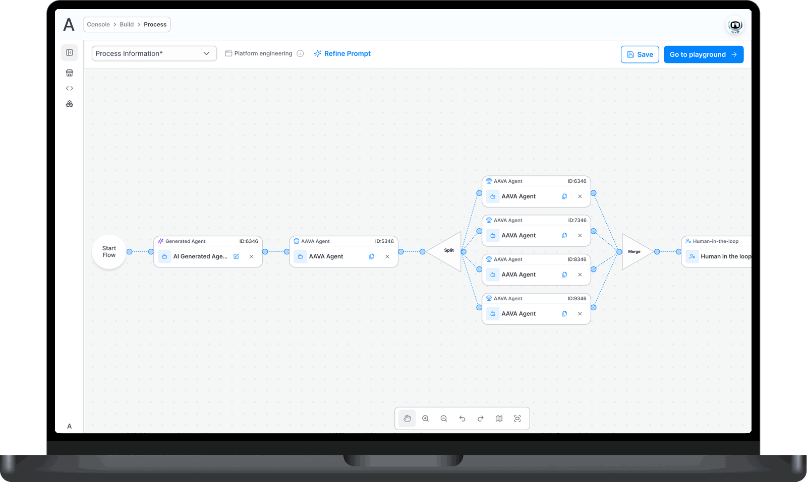
The whole thing, in six lines
Console could build an agent. It could not build a process, and teams wanted a whole module automated.
I designed APB alone: agents, workflows and logic on one canvas, so a process gets composed instead of coded.
The logic came as a client requirement: split, merge, routing, parallel execution. Real rigour, configured with dropdowns.
Review started as the builder checking their own output, which is a build step wearing review’s clothes.
I proposed three changes; all three became requirements. The reviewer now names the step that failed, re-steers it, and re-runs.
Three attempts, then the run fails. A simple version shipped, and the client came back asking for exactly this logic layer.
Why a process builder at all
Console could build an agent. It could not build a process.
Console chained agents into pipelines, which answers one question: run this task with AI. Teams arrived with a different one.
A team automating procurement or claims intake wants a dozen steps with branches, work that runs in parallel and rejoins, and a person who signs off before anything leaves the building.
The flow designer composes on the canvas. The reviewer is a subject matter expert who can tell whether a fraud assessment holds up, and may never open the canvas.
Decision: one canvas, extended
A separate process editor would have been two products pretending to be one.
The obvious path was a new surface with its own vocabulary, on the reasoning that a process is a bigger thing than a pipeline. I extended Console’s existing canvas instead.
Agents, workflows and logic compose on the same canvas, and the rail carries what you already own, then the logic, then start, end and human review.
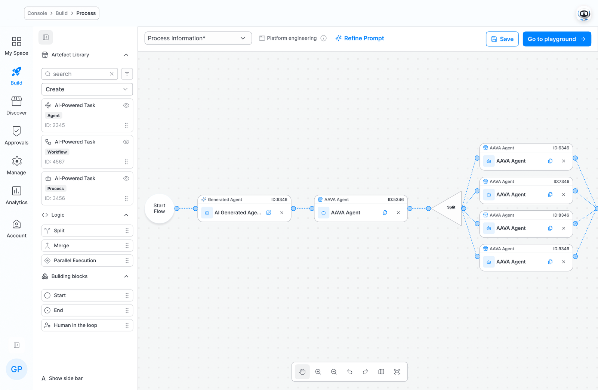
Editing an agent opens Console’s own screen and approval flow, rather than a second editor that would drift from the first inside a quarter. Once it has passed approval, the same panel offers Clone instead of Edit.
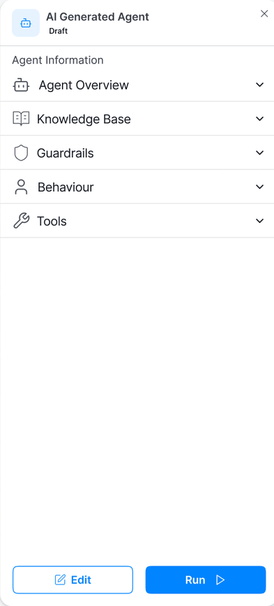
The rail is crowded: seven logic types, three artefact types and three building blocks in one column. If the logic set grows, that is what breaks first.
What it bought: anyone who can build an agent in Console already knows how to build a process.
Decision: real process logic, configured with dropdowns
The client asked for process logic. Process logic is not a beginner’s tool.
Split, merge, if-else, multi-way switch, pattern matching, predicate routing, parallel execution: a client requirement, and the grammar of BPMN.
The hardest configuration in the product, how four parallel branches recombine, is a dropdown, radio buttons and a drag. No scripting, anywhere.
Which agents it feeds, how work is distributed, what happens on failure.
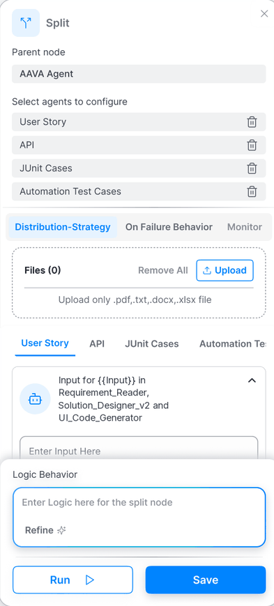
While it runs, every branch reports on its own, so a failure has an address instead of sinking into one combined result.
The same panel, mid-run.
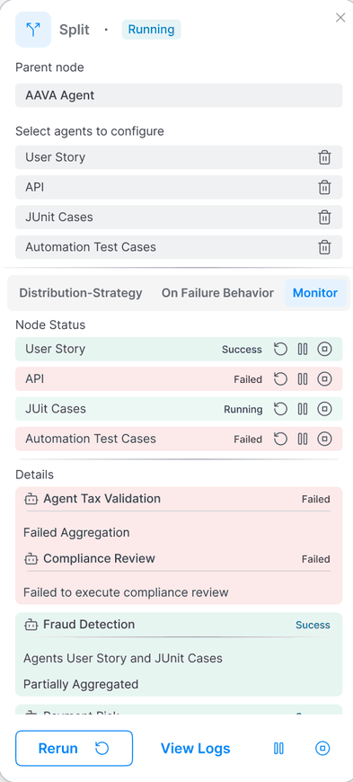
Expressiveness. Four merge strategies exist, combine, prioritise, override and a guided custom mapping, and anyone who needs something outside those four cannot express it.
The client did not ask for a simpler tool. They asked for a real one a non-technical person could operate, and only the second request is difficult.
Decision: review is a repair, not a gate
In May, the human in the loop was the person who built the flow, checking their own output.
It passed testing because the builder already knew what the output was supposed to be, which is exactly what a real reviewer lacks.
I proposed three changes. All three became requirements.
Assign someone who can actually judge it
A reviewer and a backup, chosen for domain knowledge rather than proximity to the build, with a reminder if the task sits unattended.
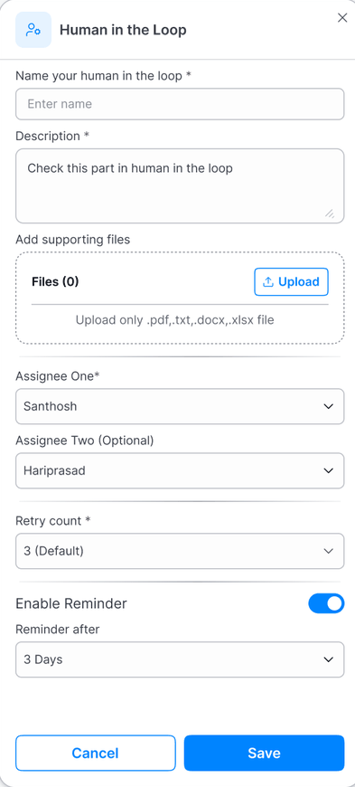
Give them enough to judge with
The checkpoint carries what the reviewer judges against. Without that an expert is guessing, and a guessing reviewer approves.
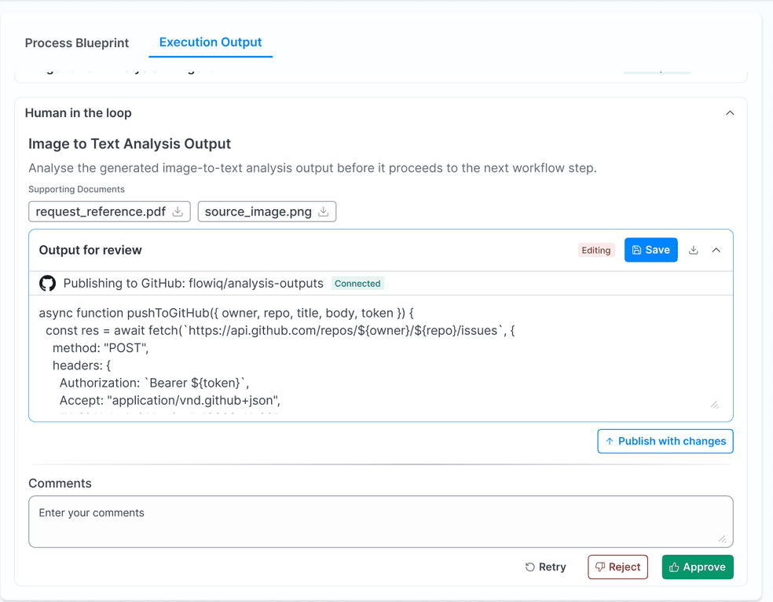
Let them fix the cause, not refuse the symptom
A reviewer can usually tell which step produced a bad output, and the old model gave them nowhere to put that. So instead of approve or reject, they pick that step and re-prompt it.
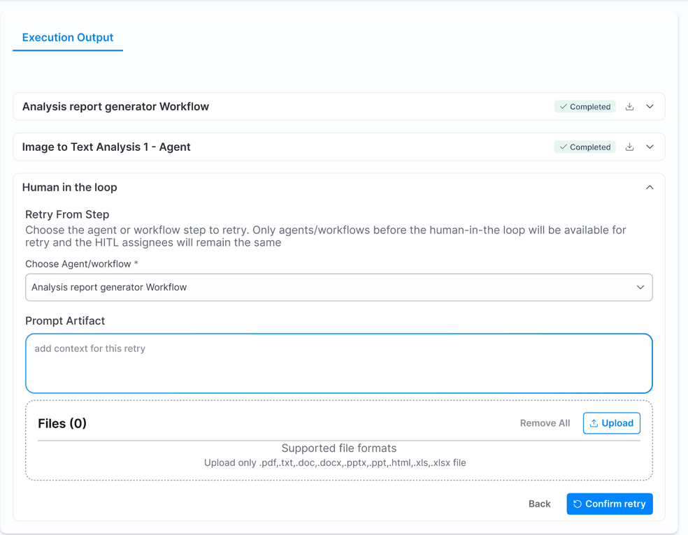
Three attempts, and then a real ending
Inside three the reviewer approves or rejects, because a third bad output is a decision, not a fourth try. Rejecting fails the run, and recovery is deliberately somebody else’s job.
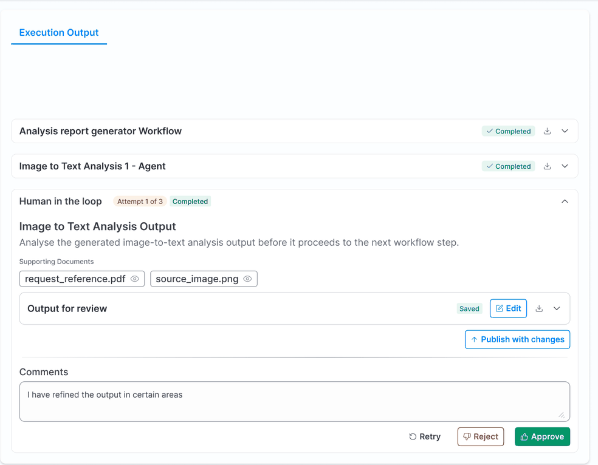
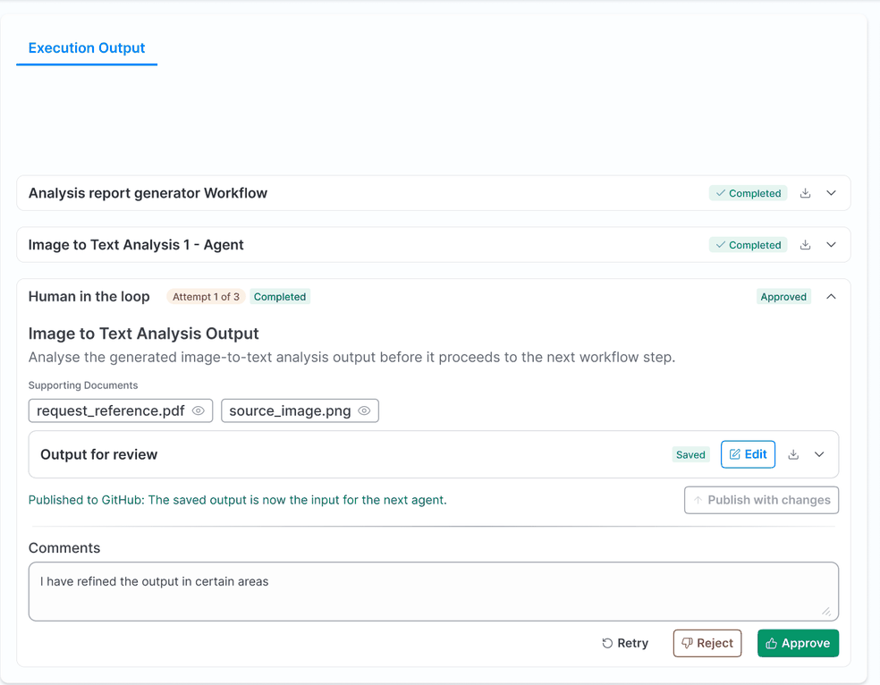
A re-run does not re-open checkpoints that were already approved, so nobody signs the same thing twice.
An unbounded retry is a loop with a person inside it. Three is enough to correct a step, and few enough that a broken one reaches someone who can change the flow.
Decision: a merge either validates or it fails
Parallel branches that quietly drop a result are worse than parallel branches that stop.
When a split fans work out to four agents and a merge brings it back, the merge is where trust is won or lost.
A merge waits for every required branch and checks each output for completeness and schema validity. Anything corrupt is excluded with its reason shown rather than swallowed.
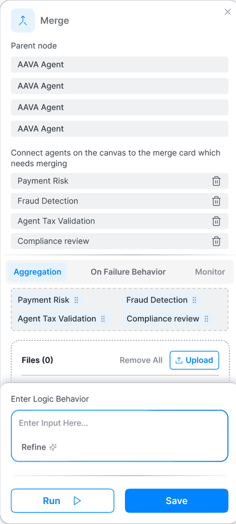
When a branch does fail, the designer has already chosen what happens: aggregate what arrived, retry and continue, or fail the aggregation.
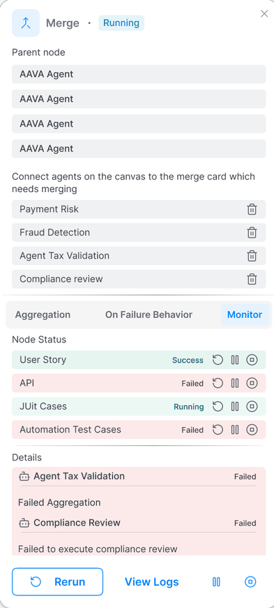
There is no fast, best-effort merge. The gates apply even when a user would rather have a rough answer now and clean it up later.
The product is sold on output you can act on without checking the working, and a merge that silently drops a branch would end that in one incident.
Watching a run
The output of a long run is an infinite scroll. Something has to be the way in.
An activity bar lists every agent, workflow and tool with a live status. Click a step and its output comes to the top of the page, which makes the bar a table of contents for a stream.
Where am I, what is happening, show me that one: answered in the same column.
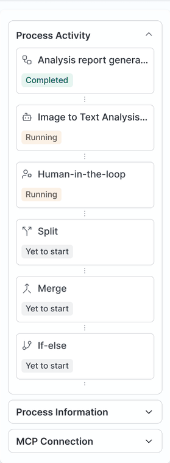
Status, tokens, cost and duration per node. The figures here are demo values.
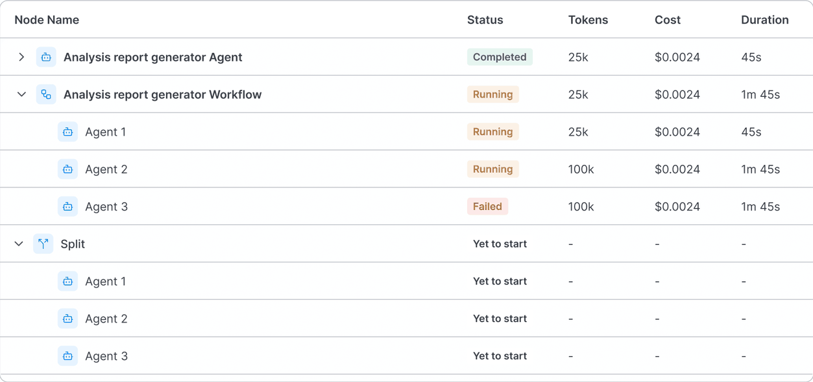
Inputs are set node by node, against a blueprint of the process.
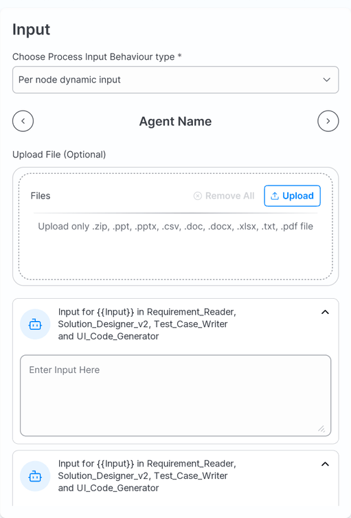
The client came back
A simple version shipped. What came back was a request for the hard part.
The first release was a proof of concept without the logic layer. It went to a financial services client, and what came back was a list of what they wanted next: branching, parallel execution, routing.
That request is why APB is being expanded rather than maintained. This design was built in August and September 2026 and runs in the development environment now.
This version is not in front of users yet, so there is nothing to report. A client asking for precisely the layer being built is the closest thing to validation there is before a launch.
What isn’t built yet
The design is ahead of the build, and some of it has not been tested by anybody.
Three surfaces are specified and not prototyped: the fan-in result view, the approval history screen, and the routing observability page. Each has acceptance criteria; none has been in front of a user.
Logic execution and prompt entry: what a person can describe in a sentence and what the engine can assemble from it are not yet the same set.
The part I’d most like to be pushed on is the review model, and the three-attempt cap in particular. It was a judgement call, and I can show the working.

Questions about any of these decisions?
The part I’d most like to be pushed on is the review model, and the three-attempt cap in particular. It was a judgement call, and I can show the working.